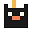

<r-window>
ventana arrastrable y redimensionable. temas none, win95, macos.

retalscópialos, pégalos, modifícalos.
el código es tuyo.
una biblioteca de Web Components vanilla y un editor en navegador para hacer webs personales. inspirado en Geocities, en la ligereza del JAMstack, y en el respeto por el código del visitante.
15 Web Components vanilla. cada uno con su demo, su docs y fallback HTML legible sin JS.
ventana arrastrable y redimensionable. temas none, win95, macos.
separador decorativo con glifos, ondas o SVG.
texto en movimiento configurable. sin el <marquee> viejo.
texto que se escribe solo, con velocidad y delay.
reloj en vivo con formato personalizable.
texto glitcheado con intensidad regulable.
efectos de cursor: sparkle, trail, custom.
tooltip anclado a elemento o siguiendo cursor.
tarjeta con slots para image, title, body y link.
tabs accesibles con keyboard navigation.
secciones expandibles con un solo abierto a la vez (opcional).
4 layouts (grid · masonry · carousel · stack) + lightbox interno.
reproductor con playlist <r-track>, loop y shuffle.
contador local (localStorage) o compartido (Worker self-hosted).
libro de visitas local o compartido (Worker self-hosted).
arquetipos descargables. cada uno trae los componentes que usa copiados dentro — snapshot inmutable, sigue funcionando aunque retals desaparezca.
composición de ventanas arrastrables a lo Geocities. el más distintivo del proyecto.
portfolio editorial tipo meowrhino / rikamichie. grid de proyectos, foco tipográfico.
scroll narrativo vertical, secciones grandes, anclas, tipografía protagonista.
índice cronológico (blog / diario). lista densa con fecha, estética 2000s-blogger.
diario / cuaderno digital. marquee, glitch, typewriter, sobre papel hueso.
portfolio editorial fondo negro, masonry de 12 fotos con lightbox y 3 proyectos.
lanzamiento de disco. portada generativa CSS, jukebox con tracklist y ventanas de créditos.
jardín digital — notas con estados (brote, en crecimiento, verde). tabs + accordion sobre serif crema.
linktree honesto. avatar CSS, 5 links, contador local, reloj, cursor sparkle. cero JS extra.
<r-counter> y <r-guestbook> arrancan en localStorage (cero servidor). para counter y guestbook compartidos entre visitantes, hay Workers de Cloudflare listos para que cada quien despliegue el suyo.
guía paso a paso de self-host →
no hay Worker público de retals. mantener uno compartido invita a spam y rate-limit abuse, y nos compromete a una infra que no queremos sostener. el self-host es la respuesta sincera.